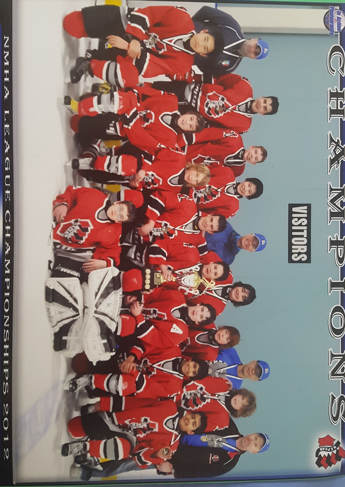

Hey there, my name is Andy Zhang, and I am currently a 4A Computer Science and Business Administration Double Degree Student at the University of Waterloo (BCS) and Wilfrid Laurier University (BBA).
I enjoy reading , exercising, and problem-solving , and my fields of interest are finance , consulting , and project management .
Please don't hesitate to contact me if you know of any exciting (and hopefully challenging ) opportunities, or if you just want to chat !
CS 240: Data Structures and Data Management (UW) BUS 362: Building and Managing Products, Services and Brands (WLU) BUS 375: Operations Management (WLU) BUS 398: Organization Behaviour II (WLU) BUS 461X: Management Consulting Practicum (WLU)
BUS 461U: Competitive Case Analysis & Presentation B (WLU); January was the actual JDCC competition in Guelph; Laurier only came second but it was overall still a great experience; I learned how to be a more effective
speaker and comunicator, and I met a ton of great people
Very productive term; I learned a great deal about investing as well as how to be a more effective person.
Cambridge Global Asset Management
This work term was amazing; I worked as a Research Analyst analyzing equities ranging from European furniture retailers to global tobacco companies. I had excellent mentors who showed me the ropes of investing, from using
Bloomberg and FactSet, to building three-statement models and interviewing company directors. I gained a great deal of insight on how an investor views a business or an industry; this work term really opened the floodgates on my interest
in business and investing. My greatest takeaway was not only the financial/investing knowledge, but the Cambridge mentality, to be humble, to abhor complacency and to be conscientious of one's own work and responsibilities. I also picked up
reading again; I had always loved books growing up so it felt like a reunion to read regularly again. I also learned about networking and the importance of
having a professional network; I finally broke out of my shell of comfort and started attending networking events.
This was a very fun work term, and I learned a great deal about investing and research, but I have yet to scratch the surface of the knowledge about markets and equities; there is still much to learn.
CS 241: Foundations of Sequential Programming (UW); this course was plenty of work, but I learned a great deal about compilers and putting all of that knowledge together in the end
to build a mini-compiler was pretty cool
CS 251: Computer Organization and Design (UW); I have always been clueless about computer hardware and this course shed some light on how hardware and software work together in computers
BUS 352: Introduction to Marketing (WLU); I learned about the different aspects of marketing; the course dealt with marketing theory, such as product/market fit and customer segmentation
BUS 354: Human Resources Management (WLU); having dealt with many recruiters, it was very insightful to see what was on the other side of the equation
BUS 393: Financial Management II (WLU); I really enjoyed the course; I learned a great deal about the cornerstones of financial theory, such as the Modigliani-Miller Theorem
BUS 461U: Competitive Case Analysis & Presentation A (WLU); this was the course associated with Laurier JDCC
I felt that I grew a great deal during this semester; I definitely felt that I was able to allocate my time and energy more effectively and as a result, I was able to be more productive and more impactful (especially
with my extracurriculars). I also started taking courses on Excel and financial modelling, and reading investing books such as Poor Charlie's Almanack and The Intelligent Investor to prepare for my upcoming
co-op work term.
Laurier JDCC
I had a blast training to compete as a parliamentary debate delegate for Laurier JDCC. I familiarized myself with the many current political and social events as well as the art of persuasion.
I also had a lot of fun doing the cheers, games and dances, and participating in the opportunities for community involvement, such as volunteering for the annual Laurier Food Bank food drive.
Laurier Student Union Team Lead
I was quite busy this semester with the approval of special event budgets; with my team, I had to screen the proposals for special events and interview event organizers from different clubs
and organizations around campus to work together to modify and approve budgets. I also worked with other council members to screen and approve new club applications and help out with events such
as Club Day; it was very good to get more involved on campus with extracurriculars not necessarily associated with my program.
Students Offering Support (SOS)
I volunteered as an instructor for the EC 120 (Introduction to Microeconomics) course. It was pretty interesting to be on the other side of the podium; I definitely sympathize much more with profs who have to
talk for hours without break. Economics was always something that interested me so it was fun teaching it to first-year BBA and Economics students; I learned many tricks to be a better teacher, including
finding relatable examples and connecting with students on a personal level. With a partner, I held 4 exam review sessions, with over 600 students attending, and raising over $12,000 towards charity.
Double Degree Club
I decided to be a mentor for first year double degree students; I personally had an extremely difficult time adjusting and succeeding during my first year in university, so I thought it would be a great if my experiences
and insights from my own (disastrous) first year can deliver value to others who are about to go into double degree. It was great hanging out and chatting with first-year students and helping them avoid some of the pitfalls
which I experienced during my first year in university.
Queen's Finance Association Conference
I chose to attend this conference because I wanted to learn more about the finance industry; I definitely learned a great deal about the different roles in finance and had a great time. I also did my first stock pitch; I finished as a
finalist but did not win.
Very productive term; I learned a great deal about investing as well as how to be a more effective person.
CO 250: Introduction to Optimization (UW); while I enjoyed the contents of the course, I found that the overwhelming focus on technical explanations
took away from the message of the course
CS 245: Logic and Computation (UW); I love logic, so this course was one of my favourite courses taken in university thus far; this course teaches propositional and
predicate logic, as well as techniques such as natural deduction, structural induction, and program verification and
MATH 239: Introduction to Combinatorics (UW); I really enjoyed the problem-solving nature of the course, particularly graph theory
BUS 231: Business Law (WLU); while I enjoyed the content of the course, I was not a big fan of all of the memorization
BUS 247: Managerial Accounting (WLU); this course taught different pricing methods, such as activity-based costing
During this semester, I participated in various extracurricular activities, such as intramural ultimate frisbee, and I focused on studying data science, taking courses on Microsoft Access and SQL.
Quantify 2018
My team placed second out of the 25 teams selected to compete in the Quantify Risk and Insurance Case Competition. The theme in the 2018 competition was how to mitigate climate change risk;
using models to analyze climate change data, my team came up with an elegant solution to implement an accelerated underwriting method, in order to more accurately price insurance premiums based on
climate change risk.
Laurier JDCC
I was selected to compete as a Parliamentary Debate delegate for Laurier's prestigious competitive business team.
Laurier Student Union Team Lead
I was selected to be the Clubs Governance Special Events Funding Team Lead for the Wilfrid Laurier Student Union for the year of 2018-2019, and I was in charge of managing the team which assesses budget proposals for events.
MathSoc VPF
I was selected to be the Vice President of Finance for the Mathematics Society at the University of Waterloo. I was in charge of the finances of a student organization representing
the over 7,000 students in the Math Faculty. I administered the Operating Fund, as well as the Capital Improvements Fund, totalling over $300,000. I sat on the board of the Math Coffee and
Doughnuts, the faculty café, and administered the Math CnD bank account. I also drafted and approved various budgets, and managed a team of dozen Finance Directors to oversee the financial
operations of the society. Finally, I participated in the Math Council, the executive decision-making body for Math students, and I proposed policies which were enacted.
STAT 231: Statistics (UW, Online); this course has a focus on rea-world applications of statistics; this course also teaches how to use R
During this work term I started learning more about finance, completing the Bloomberg Market Concepts course, and also learning about philosophy, particularly the works of
Nietzsche, and Sun Tzu.
Royal City Debate Tournament
I competed in my first university-level debate tournament, at the University of Guelph. The tournament style was Canadian Parliamentary, and my partner and I placed second overall, and I achieved
second best individual speaker.
Blackhawk Network
I worked as a Marketing Analytics Intern at Blackhawk Network. This job allowed me exposure to various different fields; I handled a variety of duties, ranging from
traditional marketing tasks, such as analyzing promotional effectiveness, and working with graphic designers to create flyer ads, to operational duties, such as analyzing monthly merchandising reports.
I was also responsible for many important projects, such as performing analysis on multi-million dollar promotions, and presenting, as well as discussing, the findings with both the VP, and the client.
Finally, I undertook many ad hoc tasks, such as automizing reports with VBA, performing analysis to optimize planograms, and representing Blackhawk at conferences and tradeshows, such as the McKesson Showcase 360°.
Overall, this work term was a very productive experience, as I was able to experience various aspects of the business world.
CS 246: Object-Oriented Software Development (UW); this was probably one of my favourite CS courses thus far; this course taught many useful skills, such as shell
scripting, C++ development, and Git technology; the assignments were very interesting (usually creating games such as Reversi, and applications such as a photo editor); the final project was
also very useful in simulating what real-world team-based software development is like
STAT 230: Probability (UW, Online); pretty cool course, realy gave me a new perspective on Poker
BUS 127: Introduction to Financial Accounting (WLU); this course focuses on a mix between accounting theory, and accounting practice, in particular the importance of having good form, and using proper notation when
compiling financial statements
BUS 283: Financial Management I (WLU); a mix between financial practice and theory; although the concepts covered were very basic, they did offer an aggregate picture of what finance is
BUS 288: Organizational Behaviour I (WLU); a theory-focused course on the human side of business; concepts were not too difficult, but there were a substantial amount of content
Much effort of this term was dedicated to career-related development, such as learning to write good résumés. I also spent quite a bit of time studying political science, as well as film studies.
ECON 250: Intermediate Macroecronomic Analysis for Management (WLU, Online); as with the previous economic courses, I really enjoyed the logical nature of the content and economic models
First Internship
My first internship was as a Corporate Sales Intern at China Merchants Bank. My duties included contacting over 1000 corporate clients (ranging from start-ups, to multi-billion-dollar corporations) through telephone calls and in person.
I handled all aspects of client-facing situations, ranging from giving margin calls, to preparing and delivering tutorials on new systems and products. I also wrote, edited, and delivered sales pitches for new financial
products, both in English and Mandarin. I had two main reasons for pursuing an internship in China: I wanted to practice my Mandarin, and I wanted to acclimate myself to the Chinese business environment.
I felt that, after living many years abroad, despite attending Saturday school, my Mandarin skills have not improved. I wanted to be in an environment which facilitates learning Mandarin, and what better environment than
being a salesman in China! My proficiency in Mandarin certainly improved during my internship in China. I also wanted to understand the Chinese business world, as China is one of the world's fastest growing economies, and will play a major role in the
business world for years to come. I learned that the Chinese business world is drastically different than that of the West. Chinese businesspeople emphasize the importance of courtesy (礼), and rely largely on personal connections,
rather than business connections. There are many rituals and customs which are different from the West, such as gift-giving, and having businesses lunches.
CS 136: Elementary Algorithm Design and Data Abstraction (UW); this course is taught in C, which is very appropriate because it is the foundation
of many modern-day languages, the course also had quite a bit of interesting programming trivia
MATH 136: Linear Algebra I for Honours Mathematics (UW); this was the first linear algebra course I've ever taken; I really liked the visual aspects of linear algebra
MATH 138: Calculus II for Honours Mathematics (UW); much alike the first course, the key to doing well is practicing questions until the process becomes mechanical
SPCOM 223: Public Speaking (UW); the mandatory communications course required by Waterloo, while I enjoyed the presentations aspect of the course, I found the course readings
excessive, and very time-consuming
BUS 121: Functional Areas of the Organization (WLU); in this course (as well as BUS 111), you roleplay as an entrepreneur with a start-up idea, and you go through
the different notions of starting a company, including conducting market research, and creating valuation models; my favourite component was probably the pitch to investors
ECON 140: Introduction to Macroeconomics (WLU); I found this course very fascinating, and very logical
My second semester at university is a trial and error process. I dedicated time to cultivating proper work ethics and discpline. I also started getting more involved in extracurriculars,
especially case competitions, such as the PRMIA Risk Management Challenge, and being selected to participate in the Undergraduate Mock Trials, hosted by CLAUSE (in which my team broke through the prelims). I also
started learning actively outside the classroom as well, such as by taking the Building a Financial Model (of a Company) course offered by the Marquee Group.
First Case Competition
The first case competition I ever took part in was the annual XCelrate Laurier Case Competition. The case was about making the decision of opening/closing a running shoe business, and a gym. Although my team and I
only placed 3rd in the competition, the competition sparked my interest for business competitions.
Joined MathSoc
I volunteered for the University of Waterloo's Mathematics Society, the organization governing students from the Math Faculty. My position was Events Director, and I was in charge of organizing, and coordinating various events
such as the Valentine's Extravanganza, and Mock Interviews/ Résumé Critiques. I marketed the events through Facebook, and also hired volunteers to help run the events.
CS 135: Designing Functional Programs (UW); very beginner-friendly course, taught using Dr. Racket, a beginner-friendly dialect of Scheme
MATH 135: Algebra for Honours Mathematics (UW); this is the "proofs" course; I found the content drastically different from math taught in high school, but more interesting as well
MATH 137: Calculus I for Honours Mathematics (UW); this course is a review of high school calculus, the trick isn't understanding content, but practicing to do questions quickly
BUS 111: Introduction to Business Organizations (WLU); very easy course, but very content heavy, and time-consuming
ECON 120: Introduction to Microeconomics (WLU); this course really sparked my interest in economics, and the workings of the market
Overall, my frist semester at university was very rough. I had a tough time finding a balance in my hectic university schedule, and furthermore, I went into my Computer Science program
with zero programming experience or knowledge. Despite the proverbial "trial by fire", I felt that I progressed much in this term, not only academically, in picking up programming, but also
in terms of perspective. I learned to be humble, to have humility, and to not compare one's progress with others'. I participated in few extracurriculars, only attending one or two debate club meetings (both Laurier Debate Society, and
UW Debate Society) and showing up to a few games of intramural basketball, I chose instead to spend time alone in the gym, or reading philosophy.
TedxOgilvieRd
I helped establish, coordinate and organize a TedxYouth conference. I contacted and pitched to businesses for sponsorships and partnerships; I marketed the event through
managing the Facebook page, and coordinating the creation of creative content, such as promotional posters. I also helped out with the logistics of the event, including finding
a suitable location, and helping set up the audio/video equipment on the day of the conference. The conference was a success, with over 100 paying attendees; the City of Ottawa (in particular
the Ottawa Public Libray) proposed a potential partnership, should the event be run again in the future.
Graduated High School
I completed the International Baccalaureate program (French Immersion) at Colonel By Secondary School (4.0 GPA).
Clubs and Activities: French Club (President; tutored fellow students in French, and organized French activities, such as French movie viewings, and French board game sessions) Kiva (Executive Member; organized fundraisers, and loaned money to low-income entrepreneurs) Book Club (Senior Member; read books and participated in book discussions) Debate Club (Senior Member; participated in debate competitions, and mentored junior debaters) Colonel By Food Drive (Organizer; coordinated volunteers for the annual school food drive) Track and Field (Team Member; competed in Javelin, Discus and Shot-put)
IB Courses Taken:
History (learned HL, took SL exam)
English (learned HL, took HL exam)
Mathematics (learned SL, took SL exam)
Physics (learned HL, took SL exam)
Chemistry (learned HL, took HL exam)
French (learned HL, took HL exam)
Theory of Knowledge
Certifications & Diplomas:
Ontario High School Diploma
International Baccalaureate Diploma
French Immersion Certificate
Awards: Honour Society (for maintaining 80+ average) OCDSB Silver Medal (for maintaining 90+ average) IB2 History Award (for achieving the highest grade in the IB2 History course)
Achieved DELF B2
I obtained the DELF B2 certification offered by the Centre international d’études pédagogiques (CIEP), certifying fluency in the French language.
Organized an English Course for Chinese Senior Citizens
After observing the difficulties our grandparents experienced in their day-to-day activities when coming to visit us in Canada, my friend and I decided to start an English
course to teach Chinese seniors English. We partnered with the Ottawa Chinese Community Service Centre, which provided us with resources, such as a classroom, and teaching supplies.
My friend and I recruited two other friends, and created lesson plans, as well as lesson hand-outs. The lessons were a huge success, and we started a second course, to teach Chinese
Seniors how to use digital technology. The courses were featured in articles in local Chinese community newspapers, and we made many meaningful connections with our elderly students.
Participated in Politics
In the summer of 2015, I volunteered for Andy Wang, a federal candidate from a major political party running for office. I canvassed over 200 houses, and called over
400 constituents; I also helped with administrative duties, such as coordinating volunteers, and setting up computers. This experience gave me great insight into the
Canadian political process, and what it means to participate in politics.
Volunteered for Kiva
I joined the Kiva chapter at my high school. Kiva is a microfinancing organization which loans funds to low-income entrepreneurs, usually in third-world countries. I really appreciate
the business model of Kiva, as I find it more sustainable, and more practical than traditional, donation-based, non-profit organizations. As an executive member of the club, I organized
fundraisers, such as bake sales and intramural tournaments, and I also actively volunteered in said fundraisers. I represented my high school's Kiva club at my school board (Ottawa Carleton
District School Board)'s first annual International Education Info-Fair.
Started Debating
My debating journey started in the debate club of my high school. I have always had issues with public speaking, and debating started as a means for me to improve my speech.
I compete in both Canadian, and British Parliamentary styles. Initially, I had troubles with just filling my speech time, but eventually, after competing in tournaments, and practicing the debate logical process, I was selected by the
Ontario Student Debating Union to compete in the Provincial Debate Championships for the Bilingual Debate category in my senior year of high school.
Volunteered as Camp Counsellor
I obtained my Basic First Aid and CPR Certification, and volunteered as a Camp Counsellor for the City of Ottawa. I organized activities for over 50 campers, and supervised
campers on excursions. I have always enjoyed attending summer camps, so I wanted to give back to the wonderful community.
Completed Kumon
Completed the Kumon Reading Program, obtain the G by 5 Star, as well as the engraved clock for completing the program.
Enlisted in RCAC
In the Royal Cadets Air Cadets program, I obtained the rank of Sergeant in the 211 Kiwanis Squadron. I learned much about leadership and discipline, and I was placed in charge of a
flight of junior cadets. I also participated in activities such as biathlon, and parading in the National Remembrance Day Ceremony.
First Math Contest
My first math contest was the Grade 6 Math Kangaroo, for which I placed first in Ottawa, and second nationally. I participated in a couple more math contests after the Kangaroo,
such as the Gauss Mathematics Contest, where I placed first for my school. Although my interest in math contests tapered off after middle school, my passion for math remains.
First Job
I am a strong believer of hard work; I got my first job at age 10, as a newspaper delivery personel for Metroland Media.
Although being a paperboy required very little skill (inserting flyers into the newspaper, and delivering the paper), and paid very little (around 10¢ per house),
I am proud to say that I never missed a single delivery, rain (snow) or shine.
This job has taught me the importance of responsibility, and the significance of money.
Joined Scouts Canada
I joined the Cub Scouts, and later the Scouts program, as a member of the 1st Nepean Troop. I have always enjoyed being outdoors, partaking in activities such as hiking, canoeing, and camping.
I have learned many valuable survival skills, and earned many badges along the way. I particularly enjoyed the community involvement aspect of the Scouts program, such as park clean-ups,
and volunteering in senior homes.
Growing up I have always stayed active; here are some of the activities I partook in: Hockey (Left Wing; Nepean Minor Hockey Association) Soccer (Full Back; Nepean City Soccer Club & Ottawa South United Soccer Association) Alpine Ski Badminton (Doubles & Singles; Soong Badminton Academy) Swimming Taekwondo (Black Stripe; International Taekwondo Federation) Table Tennis (Singles; Trained under Geng Lijuan)

I believe that a healthy body is a prerequisite for high performance and success. I try to maintain an active and balanced lifestyle through exercising (strength and
cardiovascular training), as well as intramural sports.
Started Playing Violin
Music is a lifelong passion of mine; I enjoy all genres of music, ranging from classical to rock, from hip hop to folk.
I relish in discovering new, niche, genres of music, such as Calypso music from Trinidad and Tobago (check it out!). I have learned to play numerous
instruments, such as piano, bongo drums, and alto saxophone.
My certifications include:
Level 8 Royal Conservatory of Music (Violin)
Advanced Rudiments (First Class Honours with Distinction)
Favourite composer: Niccolò Paganini
First Art Competition
Received many awards, including first place, for various pieces entered into the City of Shenzhen Children's Painting and Calligraphy Exhibition
(深圳市少儿书画荟萃系列展) hosted by the Folk Artists Association of Shenzhen (深圳市民间文艺家协会) and the Children's Art Research Association of Shenzhen (深圳市少儿艺术硑究会).
I have always had an appreciation for visual arts, from Caravaggio to Kusama, I believe that art plays a more important role in society than ever.